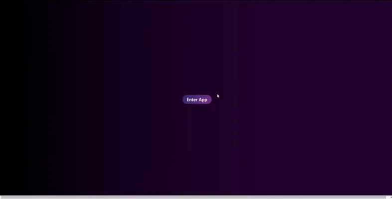

This one is for crypto enthusiasts! I present to you The Crypto Copy Cat is a web application for users to watch and copy different investors’ strategies. The web application was the first ever Full Stack project I designed. When I was in school, I embarked on a mission to create my first-ever Full Stack project, and that’s when the idea of Crypto Copy Cat was born. Powered by my passion for cryptocurrencies and backed by my knowledge of web development, this project became my crowning achievement.
The Tech Stack
To bring Crypto Copy Cat to life, I leveraged the power of Django in the Back-end and VUE.js in the Front-end. It was a thrilling experience to venture into the world of APIs that for beginners “seemed to work only on my machine” -__- . How can forget the countless hours I spent giving divs classes Bootstrap names just to center a simple table? Ah, the memories!
Unlocking the Base Functionality
At the core of the Crypto Copy Cat app lies a user-friendly webpage that allows users to effortlessly connect their crypto wallets to from their browsers to the website. By establishing this connection, users gain access to a myriad of features that enhance their crypto investment journey.
Let’s take a peek at the code snippet that enabled wallet integration:
Yep!!! That is it. A simple object called “Ethereum”😒.
Authenticating Access and Harnessing the Blockchain
With authenticated access and a simple API call to the blockchain, users can unlock a treasure trove of information associated with their crypto wallets. For this purpose, I utilized ZAPPER’s powerful API capabilities.
Here’s a glimpse into the code that facilitated the protocol check:
Real-time Information at Your Fingertips
But that’s not all! Crypto Copy Cat goes the extra mile by providing users with real-time updates on crypto exchanges, news, and prices in USD. Furthermore, users have the freedom to register multiple crypto wallets within the app and monitor their transactions as they happen. This comprehensive platform aims to be a one-stop solution for managing crypto wallet transactions and leveraging valuable insights to make informed investment decisions.
Conclusion
And there you have it—a brief introduction to the mesmerizing world of Crypto Copy Cat. By offering users the opportunity to watch and emulate successful investors’ strategies, this web application empowers crypto enthusiasts like never before.
Now I haven’t even looked at the code since developed – Sorry I got a job now! But I’m sure with the skill I have today I can rebuild this app a lot better. But I don’t want to destroy this app – its like the first draw my daughter ever gave me – I will keep it forever as it, just for memories.
